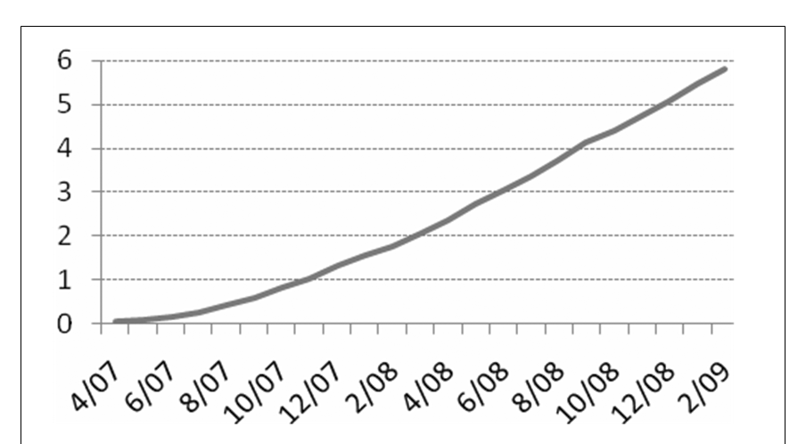
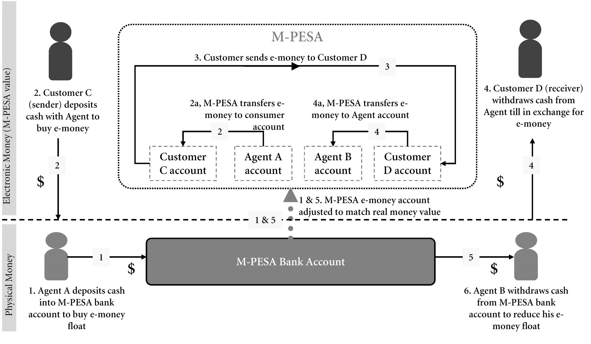
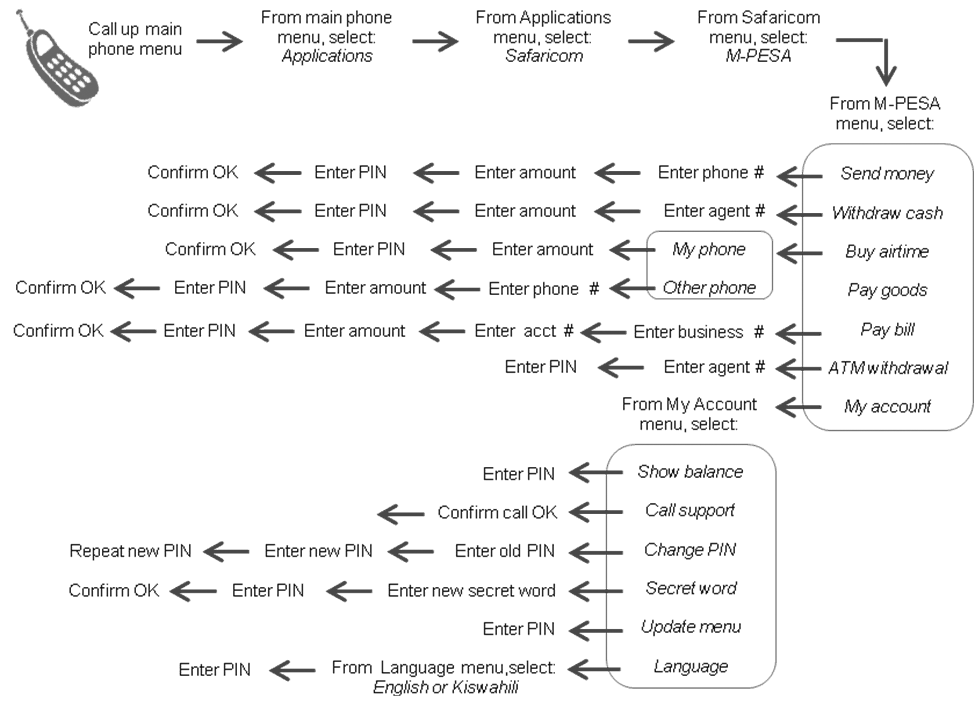
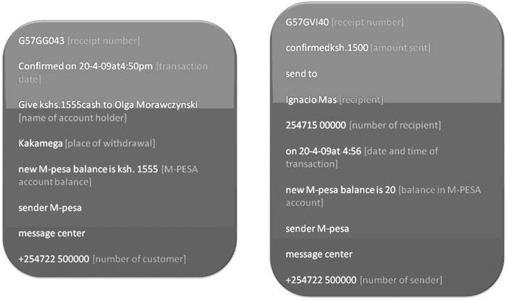
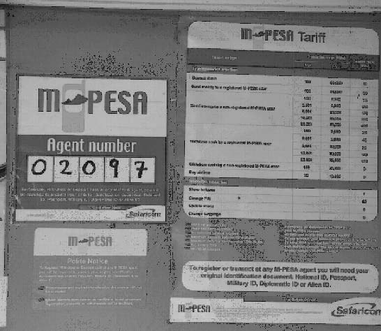
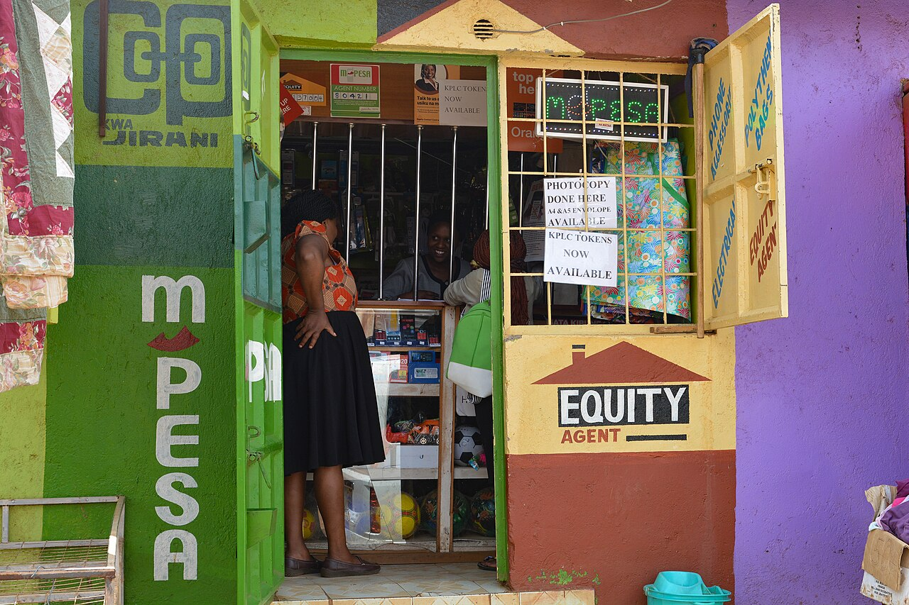

Case study 6 · M-Pesa (Kenya) · deep study
M-Pesa: how a text menu became Kenya’s bank
Built from two case studies: one by the Vodafone pair who built it, one from 14 months of fieldwork in Kenya. Then two peer-reviewed studies on what it did to people’s lives. It was designed for microfinance loans; people used it to send money home.
- A
- Controlled test (A/B, holdback)
- B
- Insider number, no method given
- C
- Expert analysis, no data
- D
- Dated, news or unverifiable
Hughes & Lonie · the people who built it
Built for loan repayments; people used it for family B

The pilot was for one job: borrowers of Faulu, a microfinance lender, repaying weekly loans by phone instead of a group treasurer taking cash to a bank by bus “accompanied by a suitable bodyguard”. Then the team watched the transaction logs and saw things they never designed for:
- people repaying other people’s loans in return for services;
- businesses using it as an overnight safe, because banks closed before the agent shops;
- people depositing in one town and withdrawing in another a few hours later, so they didn’t carry cash on the road;
- a woman sending her robbed husband his bus fare home.
So the national launch dropped the loans and kept three things only: cash in/out at an agent, send money to a phone, buy airtime, sold as one idea: “Send money home.” The authors: “a significant amount of the complexity in the product was stripped.”
our note This is the clearest case in the site of a pilot changing a product’s purpose. The designers didn’t ask users what they wanted; they watched what users did with it, then cut everything else.
Evidence Written by the builders themselves (Hughes led it at Vodafone; Lonie ran the pilot in Kenya). First-hand, but not independent (B). Chart from Mas & Morawczynski. Hughes & Lonie, Innovations 2(1-2), 2007
Hughes & Lonie · Figure 2
How the money moves: real cash in a bank, matching e-money on phones B

1234- 1Agent A puts real cash into the M-PESA bank account and gets the same amount of e-money (“float”).
- 2A customer hands cash to Agent A and gets e-money on their phone.
- 3The customer sends e-money to another phone. No bank account needed on either side.
- 4The receiver gives e-money to Agent B and takes cash from the till.
One rule held it together: “The e-money must always exactly match the real money or we could find ourselves in the unfortunate situation of creating currency.” Every shilling on a phone has a shilling in a real bank (Commercial Bank of Africa), held for customers.
our note For the user, all of this disappears: they hand over cash and a text arrives. The design work is making the hidden system so reliable that nobody has to understand it.
Evidence The builders’ own diagram (B). Hughes & Lonie 2007
Mas & Morawczynski · Figure 2
The menu: every payment is four short steps B

1234- 1The way in: phone menu → Applications → Safaricom → M-PESA. It lives on the SIM card, so it’s on every phone.
- 2Send money: phone number → amount → PIN → OK. One question per screen, then the whole request leaves as one SMS.
- 3Changing your PIN asks for the old one, then the new one twice.
- 4Language: English or Kiswahili. Every message had to fit 160 characters in both.

Why a SIM menu and not SMS codes or an app: smartphones were rare, and SIM toolkit was “standard software on all SIM cards”. The menu loads instantly because it’s on the phone; it collects one answer at a time; then sends one encrypted SMS, so a dropped signal can’t leave a payment half-done.
There is no “deposit” item. Depositing is done by the agent, who sends you e-money for your cash. The person with the training does the hard part.
our note Swahili was the surprise constraint: “getting the Swahili messages down to no more than 160 characters. By contrast, English is a very compact language.” Language decides layout, even on a text screen.
Evidence Field study + Safaricom’s menu, drawn by the authors (B). Mas & Morawczynski, Innovations 4(2), 2009
Mas & Morawczynski · Figure 3
The SMS receipt is the main screen of M-Pesa B

123- 1A receipt number on every transaction, used to settle disputes.
- 2The other person’s name (left: who gave you cash; right: who you sent to), so you can check it went to the right person: “a frequent source of error”.
- 3Your new balance, in every message. This cut balance enquiries.
Both sides get a text after every transaction. Researchers found people keeping receipts on their phones for months: to track money, and, as urban men said, to check when they last sent money home, or as proof in case “issues” arise with their relatives.
our note Monzo’s fixed payment layout and Idea 003’s big reference number are the same idea: the confirmation isn’t an afterthought, it’s the thing people keep and show.
Evidence Real receipts from the authors’ own transactions, annotated by them; interviews in Kenya (B). Mas & Morawczynski 2009
Mas & Morawczynski · field photo
A paper log, signed, because a text didn’t feel like proof B
Safaricom already had every transaction in its system. It still made every agent write each one in a branded paper book, in triplicate: balance, date, agent ID, transaction ID, type, amount, phone, name, national ID. The customer signs.
Why: “Many customers draw comfort from seeing their electronic transaction recorded on paper.” People had lost money in pyramid schemes and feared fake agents. The authors note the master agents probably never use their copies; the log is there for trust.
our note A deliberately “redundant” step that exists only for feeling. It’s the opposite of removing friction, and it worked because the risk people feared was real.
Evidence Field observation (B). Mas & Morawczynski 2009
Pilot + launch · agents
Agents were the hard part, not the phone B

123- 1Each shop shows its agent number, which customers type to withdraw cash.
- 2The same price list, posted in every shop. Agents may not charge extra.
- 3“To register or transact… you will need your original identification document.”

First pilot problem: shop assistants wouldn’t hand out cash because a text message told them to. “It was a brave shop assistant who opened the employer’s till.” Fix: separate M-Pesa cash floats, a word from head office, and Lonie visiting agents every day until they got used to it.
At scale, the risk was agents running out of cash or e-money. If a customer can’t withdraw, they can’t tell if it’s one shop or the whole system. So: ~300 master agents move cash between city shops (lots of deposits) and village shops (lots of withdrawals); territory managers visit monthly and score each item 0 or 1, not to punish, “to trigger appropriate conversations”.
Evidence Builders’ account + field study (B). Hughes & Lonie 2007; Mas & Morawczynski 2009
Mas & Morawczynski · pricing
Prices were designed like an interface B
- Fees in shillings, not percentages, posted in every shop, unchanged for two years despite inflation. Easy to compare with the bus fare.
- Deposits free, no minimum balance. You pay only when you “do something” with money.
- Sending to a non-customer costs about three times more, but they withdraw for free. The sender has the power, so the sender feels the push; the receiver gets a great first experience. Rural relatives said their city relatives made them sign up.
- Changing your PIN was made more expensive, because people then remembered their PIN. Balance enquiries were repriced too, and the balance was added to every receipt.
our note Price used as a nudge, not just revenue. The PIN-change fee is a strange, real example of friction that helps the user. One gap they found: the app didn’t tell you if the receiver was registered, so the fee could surprise you.
Evidence Field study with Safaricom data (B). Mas & Morawczynski 2009
Hughes & Lonie + Mas & Morawczynski
Fixing what users actually did B
- Lost SIM cards. Half the pilot users already had a phone, so they carried the M-Pesa SIM in their wallet and swapped it in to pay. SIMs got lost and spontaneous payments dropped. Fix: move M-Pesa onto the SIM they already used, keeping their number. Lost SIMs fell to “negligible”, transactions rose.
- Shared agent PINs. Several assistants used one phone with a “not-so-secret PIN”. Fix: one till, several staff, each with their own ID and genuinely secret PIN.
- Agents chasing sign-up bonuses (KSh 80 per customer) and registering badly. Fix: half the bonus paid only after the customer’s first deposit, and only near their own shop.
- Training. For people new to phones, sessions began with “the concept of a menu”. One session: a tin shed, midday sun, a 40-a-side football match outside. For launch, a training agency with fifty trainers visited shops regularly.
our note Every fix follows real behaviour instead of fighting it. People swap SIMs, share PINs and chase bonuses; the design made the right behaviour easier rather than writing rules against the wrong one.
Evidence First-hand pilot account + field study (B). Hughes & Lonie 2007; Mas & Morawczynski 2009
Jack & Suri · American Economic Review, 2014
When a bad week hits, users don’t cut spending A
From the paper’s abstract. Bars show the size of the drop; scale 0–10%.
Why: after a shock, M-Pesa users received more money, in bigger amounts, from more different people. The study followed households for about three years as use went from 43% to 70%; a test on data from before M-Pesa backs the result.
our note “Send money home” (step 1) is exactly what shows up here: the value is that family can reach you in a bad week.
Evidence Peer-reviewed, panel data, falsification test (A). Numbers from the working-paper version. Jack & Suri, AER 104(1), 2014
Suri & Jack · Science, 2016
194,000 households out of extreme poverty A
Interquartile effects from the paper. Grey = a fall. Scale 0–25%.
Across Kenya: at least 194,000 households (2%) out of extreme poverty, and 185,000 women moving from farming into business. Measured by distance to agents, which is why step 6 matters: the agent network is the access.
our note Contested: Bateman, Duvendack & Loubere (2019) argue there’s no real control group. The study also lost 35% of households over six years. A for method and publication, with that caveat.
Evidence Peer-reviewed in Science; natural experiment, not randomised; disputed (A, contested). Suri & Jack, Science 354(6317), 2016
M-PESA app · 2021 and 2026
The smartphone app came later, and struggled D
A 2021 “super app” modelled on Alipay and WeChat had functionality issues that an analyst said disappointed users and slowed adoption. In April 2026 a merged “My OneApp” replaced it for millions, and drew criticism of its design.
our note Same lesson as PhonePe and Monzo: a payment habit is hard to move, and M-Pesa’s strength was a menu that didn’t change for years.
Evidence News and analyst commentary only (D). Mondato; The Star, 2021 and 2026
Honest gap
What we couldn’t find
Both case studies are from 2007–2009: they describe M-Pesa’s first years, not today. The builders’ account is first-hand but not independent. No usability testing numbers (task times, error rates) were published. Mas & Morawczynski’s figures are reproduced from the journal PDF; some are low resolution. The 2014 numbers come from the working-paper copy.
Where the evidence and images come from
- M-PESA: Mobile Money for the “Unbanked”, Nick Hughes & Susie Lonie, Innovations 2007 (PDF). Service diagram = their Figure 2.
- Designing Mobile Money Services: Lessons from M-PESA, Ignacio Mas & Olga Morawczynski, Innovations 2009 (PDF). Growth chart, menu tree, SMS receipts, agent log and agent wall = their figures and photos.
- Jack & Suri, AER 2014 (open copy); Suri & Jack, Science 2016 (PDF); critique, 2019.
- App: 2021 launch, Mondato, 2026 OneApp.
- Photos, Wikimedia Commons: menu (Ivan Small, CC BY-SA 2.0), agent (Fiona Graham, CC BY-SA 2.0). Pins and notes are ours.